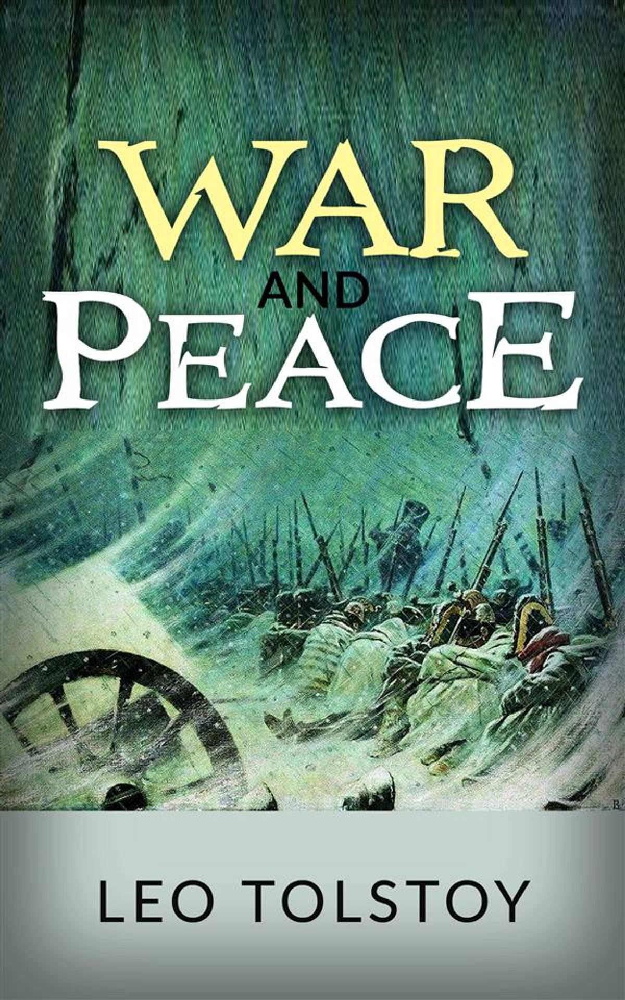

War and Peace
Library

The novel begins in July 1805 in Saint Petersburg, at a soirée given by Anna Pavlovna Scherer, the maid of honour and confidante to the dowager Empress Maria Feodorovna. Many of the main characters are introduced as they enter the salon. Pierre (Pyotr Kirilovich) Bezukhov is the illegitimate son of a wealthy count, who is dying after a series of strokes. Pierre is about to become embroiled in a struggle for his inheritance. Educated abroad at his father's expense following his mother's death, Pierre is kindhearted but socially awkward, and finds it difficult to integrate into Petersburg society. It is known to everyone at the soirée that Pierre is his father's favorite of all the old count's illegitimate progeny. They respect Pierre during the soiree because his father, Count Bezukhov, is a very rich man, and as Pierre is his favorite, most aristocrats think that the fortune of his father will be given to him even though he is illegitimate.
Also attending the soirée is Pierre's friend, Prince Andrei Nikolayevich Bolkonsky, husband of Lise, a charming society favourite. He is disillusioned with Petersburg society and with married life; feeling that his wife is empty and superficial, he comes to hate her and all women, expressing patently misogynistic views to Pierre when the two are alone. Pierre does not quite know what to do with this, and is made uncomfortable witnessing the marital discord. Pierre had been sent to St Petersburg by his father to choose a career for himself, but he is quite uncomfortable because he cannot find one and everybody keeps on asking about this. Andrei tells Pierre he has decided to become aide-de-camp to Prince Mikhail Ilarionovich Kutuzov in the coming war (The Battle of Austerlitz) against Napoleon in order to escape a life he cannot stand.
The plot moves to Moscow, Russia's former capital, contrasting its provincial, more Russian ways to the more European society of Saint Petersburg. The Rostov family is introduced. Count Ilya Andreyevich Rostov and Countess Natalya Rostova are an affectionate couple but forever worried about their disordered finances. They have four children. Thirteen-year-old Natasha (Natalia Ilyinichna) believes herself in love with Boris Drubetskoy, a young man who is about to join the army as an officer, the mother of Boris is Anna Mikhaylovna Drubetskaya who is a childhood friend of the countess Natalya Rostova, Boris is also the godson of Count Bezukhov (Pierre's father). Twenty-year-old Nikolai Ilyich pledges his love to Sonya (Sofia Alexandrovna), his fifteen-year-old cousin, an orphan who has been brought up by the Rostovs. The eldest child, Vera Ilyinichna, is cold and somewhat haughty but has a good prospective marriage to a Russian-German officer, Adolf Karlovich Berg. Petya (Pyotr Ilyich) at nine is the youngest; like his brother, he is impetuous and eager to join the army when of age.
At Bald Hills, the Bolkonskys' country estate, Prince Andrei departs for war and leaves his terrified, pregnant wife Lise with his eccentric father Prince Nikolai Andreyevich and devoutly religious sister Maria Nikolayevna Bolkonskaya, who refuses to marry the son of a wealthy aristocrat on account of her devotion to her father and suspicion that the young man would be unfaithful to her.
The second part opens with descriptions of the impending Russian-French war preparations. At the Schöngrabern engagement, Nikolai Rostov, now an ensign in the hussars, has his first taste of battle. Boris Drubetskoy introduces him to Prince Andrei, whom Rostov insults in a fit of impetuousness. He is deeply attracted by Tsar Alexander's charisma. Nikolai gambles and socializes with his officer, Vasily Dmitrich Denisov, and befriends the ruthless Fyodor Ivanovich Dolokhov. Bolkonsky, Rostov and Denisov are involved in the disastrous Battle of Austerlitz, in which Prince Andrei is badly wounded as he attempts to rescue a Russian standard.
The Battle of Austerlitz is a major event in the book. As the battle is about to start, Prince Andrei thinks the approaching "day [will] be his Toulon, or his Arcola",[18] references to Napoleon's early victories. Later in the battle, however, Andrei falls into enemy hands and even meets his hero, Napoleon. But his previous enthusiasm has been shattered; he no longer thinks much of Napoleon, "so petty did his hero with his paltry vanity and delight in victory appear, compared to that lofty, righteous and kindly sky which he had seen and comprehended".[19] Tolstoy portrays Austerlitz as an early test for Russia, one which ended badly because the soldiers fought for irrelevant things like glory or renown rather than the higher virtues which would produce, according to Tolstoy, a victory at Borodino during the 1812 invasion.